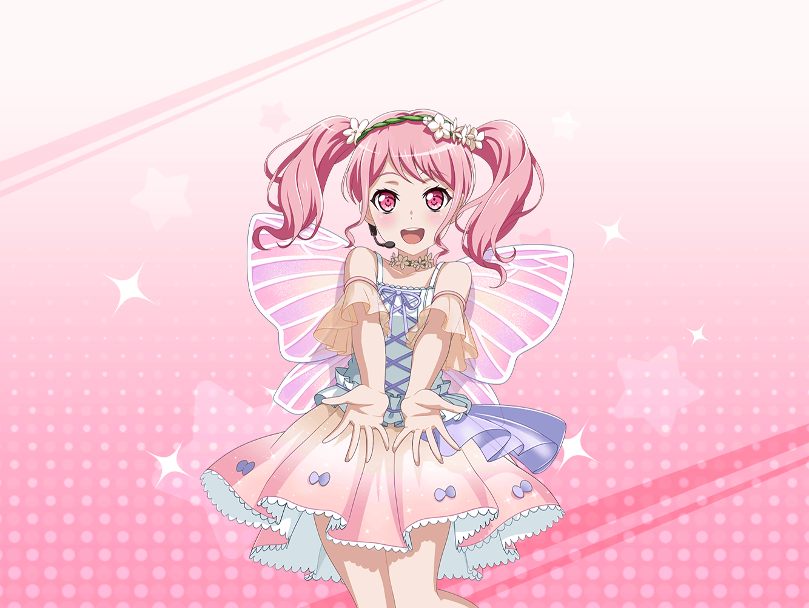

事務所
彩
おはようございますっ
千聖
おはよう、彩ちゃん
彩
あれ、他のみんなはまだ来てないの？
千聖
今のところ、私と彩ちゃんだけね
彩
そっか。まだレッスンまで時間あるもんね。
そういえば、この間の舞台の千聖ちゃん、すっごく良かったよね！
思い出しても泣けてきちゃうくらいだよ～
彩
私、あの舞台からすっごくパワーもらったの！
千聖ちゃんの演技はお客さんを元気にする力があると思うんだ
千聖
そう？ そんなことを言ってもらったのは初めてよ
彩
私に憧れのアイドルがいたみたいに、
千聖ちゃんに憧れて役者を目指す子がいるだろうなぁ
千聖
ふふ、どうかしら。そうだったら嬉しいけれど。
私の演技はまだまだだから、憧れてもらえるように頑張るだけね
彩
そんなことないよ！
絶対ファンになった人いると思うよ！
だって、私千聖ちゃんのファンになったもん！
千聖
本当？
誉めても何も出ないわよ
彩
だからお世辞じゃないって～！
事務所スタッフ
千聖さん、今大丈夫ですか？
千聖
はい、なんでしょうか
事務所スタッフ
ファンレターが届いているので、どうぞ
千聖
ありがとうございます
彩
わぁっ、いっぱい来てる！
事務所スタッフ
今日は大体３０通くらい来ていますね
千聖
ドラマが放送されたり、舞台に出た直後は
感想を送ってくれる方が多いの。
定期的に送ってくれる方もいるのよ
彩
へぇ、そうなんだ。
返事は書いたりするの？
千聖
ええ、書いているわよ。
基本的に全員に返信するのが私のポリシーなの
千聖
せっかくファンの方が私のために書いてくれたんだもの、
何かお返事したいじゃない
彩
そうだよねっ！
じゃあ、私も千聖ちゃんにファンレター書いたら
お返事くれる？
千聖
えっ？
……普段から会っているのに、私の返事、ほしいかしら？
彩
ほしい！ 千聖ちゃんがどんなこと書くのか気になるよ～
千聖
そ、そう。送ってくれたら、返事を書くわよ。
一般のファンの方を優先するから、彩ちゃんへの返事は
少し遅れてしまうかもしれないけど
彩
うん、私の返事はいつでもいいよっ。
後で書いて渡すね！
彩
そうだ、さっき届いてたお手紙、読んでもいい？
千聖
構わないわ
彩
やったぁ！ じゃあ、千聖ちゃんも一緒に読もうよ！
千聖
いいけど……
千聖
（なんだか、自分宛のファンレターを読まれるのって
気恥ずかしいわね……）
彩
どれにしようかな～……
あっ、このクリーム色のお手紙にしようっと！
差出人は小学生の女の子みたい
彩
あっ、すっごくかわいい千聖ちゃんの似顔絵がついてる！
そっくりだよ！
千聖
どれ？ 彩ちゃん、私にも見せて
彩
ほら、これ！
千聖
ふふっ、本当だわ。私によく似てる。
きっと一生懸命描いてくれたのね
彩
絵の下に文が書いてあるね。えーっと……
彩
『わたしはしらさぎさんがだいすきです！
かわいいし、えんぎもじょうずだし、わたしのあこがれです！
いつかしらさぎさんみたいなじょゆうさんになりたいです』
彩
……だって。
ほら、やっぱり～！
千聖ちゃんに憧れてる子、いたよ！
千聖
彩ちゃんの言う通りだったわね。
ますます頑張らないといけないわ
彩
私も千聖ちゃんに負けないように頑張るぞー！